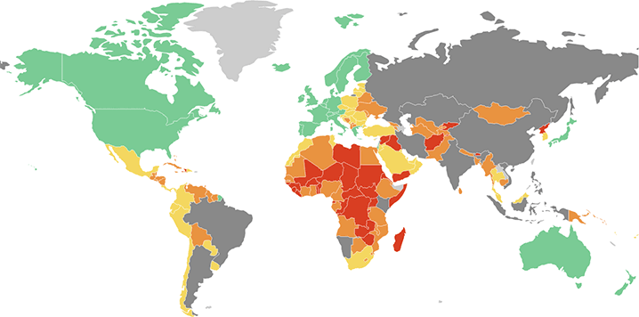

A Traveler’s Guide To The Risks Of Seeking Medical Care
International SOS rates medical care around the world, looking at local standards, availability of prescription drugs, cultural barriers and the threat of serious infectious diseases. The overall level of risk cannot be assessed in large, developing countries (shaded dark gray) because quality of care can vary dramatically between urban and rural parts.
